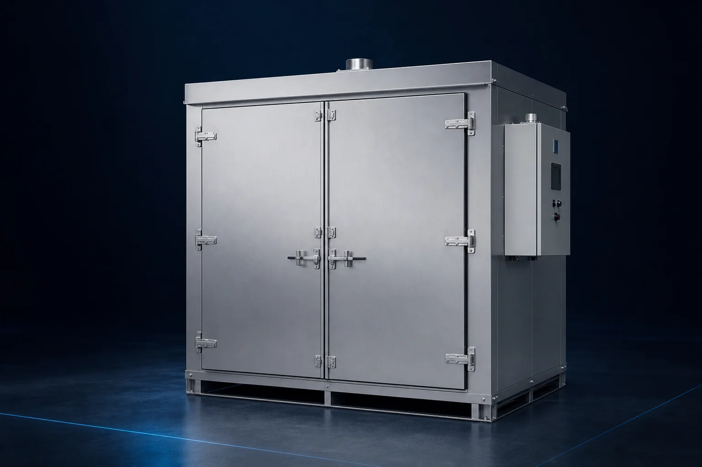
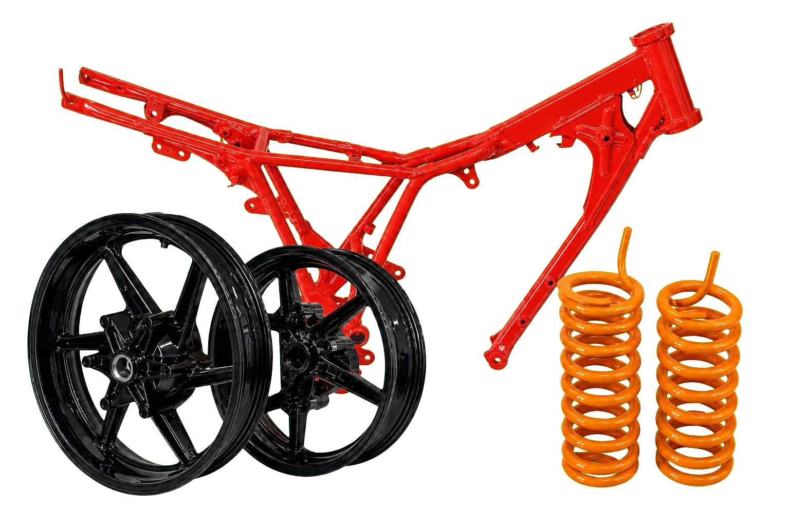

大型ウェットブラストマシン・粉体塗装設備
大型ウェットブラストマシンから、
粉体塗装・焼付まで。
現場に合う設備を一つに。
ホイールや大型エンジンに対応するウェットブラストマシンを中心に、粉体塗装、焼付まで。ワークと現場に合う設備構成を、ひとつの窓口で一緒に考えます。
仕様・設置条件を確認後、正式見積をご案内します。
 製品構成イメージ／実際の仕様・外観とは異なる場合があります
製品構成イメージ／実際の仕様・外観とは異なる場合があります
01 WET
02 SAND
03 COAT
04 CURE
01 / 販売中大型ウェットブラスト
02 / 開発予定サンドブラスト
03 / 準備中粉体塗装機
04 / 準備中粉体塗装用乾燥炉
PROCESS DESIGN
設備単体ではなく、
工程全体で考える。
処理する素材、ワーク寸法、仕上がり、処理量、設置環境。それぞれの条件を整理し、工程間の食い違いを減らします。
- 01SURFACE PREP
下地処理
ウェットまたは乾式ブラストを、目的と素材から選定。
- 02POWDER COATING
粉体塗装
色、膜厚、処理量、色替え頻度に合わせて設備を検討。
- 03CURING
焼付
ワーク寸法と粉体メーカー指定条件に合わせて炉を検討。
※材質や要求品質により、洗浄・乾燥・防錆・マスキング・冷却等の工程が別途必要です。
EQUIPMENT LINEUP
取扱機材
販売中の製品と、現在開発・取扱準備中の機材を掲載しています。
 大型ワークに対応する実機
大型ワークに対応する実機
01 販売中・実機デモ受付
LARGE WET BLAST MACHINE
ホイールや大型エンジンに対応する、
大型ウェットブラストマシン。
レストアや部品洗浄に使える大型キャビネット式ウェットブラストマシンです。本体電源AC100V、推奨コンプレッサー5.5kW、作業中の視界確保を助ける電動ワイパーを搭載しています。
- 外形寸法
- W1000 × D800 × H1900mm
- 本体電源
- AC100V
- 推奨コンプレッサー
- 5.5kW
- 視認装備
- 電動ワイパー
販売価格898,000円税区分・送料・設置費等は正式見積
100Vコンプレッサーや200V・2.2kW機では、推奨条件に比べ噴射力・処理速度が低下します。
 AI生成コンセプト画像／製品仕様・外観は未確定
AI CONCEPT
AI生成コンセプト画像／製品仕様・外観は未確定
AI CONCEPT
02 開発予定・事前相談受付
DRY SAND BLAST MACHINE
錆・旧塗膜の除去を想定した、
乾式サンドブラスト。
研削材をエアで噴射する、通常のキャビネット型サンドブラストマシンを開発予定です。対象ワークと用途を伺いながら、必要な仕様を検討します。
現在検討している項目
- キャビネットの有効寸法
- 使用する研削材
- 必要なエア量・圧力
- 集塵方式
- 照明・視認性
- ワークの出し入れ方法
掲載画像はAIで作成した構想イメージです。仕様・価格・発売時期は未定です。
開発予定機を相談
設備構成イメージ／仕様策定中
03 取扱準備中・導入相談受付
POWDER COATING SYSTEM
塗るものと仕上がりから考える、
粉体塗装機。
対象ワークの材質・寸法、使用する粉体、色替え頻度、処理量、作業スペースを伺い、必要な設備構成を整理します。
案件ごとに確認
- ワークの材質・寸法・重量
- 色・質感・膜厚
- 処理量・色替え頻度
- 電源・圧縮空気・接地
- ブース・換気・集塵環境
仕様・価格・発売時期は策定中です。現時点では工程・導入相談のみ受け付けています。
粉体塗装を相談

AI生成による参考イメージ／実機写真へ差し替え予定
04 取扱準備中・導入相談受付
POWDER CURING OVEN
ワーク寸法と焼付条件から考える、
粉体塗装用乾燥炉。
ワーク寸法に合わせて選べる2サイズをご用意する予定です。必要温度・保持時間、処理量、設置スペース、搬入経路、利用可能な熱源を確認し、受注仕様を検討します。
120サイズ炉内内寸 約1200 × 1200 × 1200mm販売価格 1,200,000円（税別）最高温度 220℃／三相200V・6kW小規模施工・4ミニショップ・バイクホイール前後におすすめ
180サイズ横幅 約1700 × 奥行 約700 × 高さ 約2000mm販売価格 1,800,000円（税別）最高温度 220℃／三相200V・10～15kWバイクフレームや自動車ホイール4本の焼付におすすめ
案件ごとに確認
- 最大ワーク寸法・重量・数量
- 粉体メーカー指定の焼付条件
- 炉内有効寸法・扉開口
- 電源・熱源・換気・排気
- 設置場所・搬入経路・安全設備
溶剤塗料や可燃性物質の加熱用途を示すものではありません。掲載価格は税別です。送料・搬入設置費等は正式見積に明記します。
粉体塗装の内製化・新規開業
必要な仕上げを、
自社の仕事に。
レストアや自社製品の仕上げに必要な粉体塗装を内製化。粉体塗装サービスで開業したい方にもおすすめです。
- 外注待ちを減らし、納期を自社で管理
- 試作・小ロット・再塗装にも柔軟に対応
- レストア事業の新しいサービスとして展開
乾燥炉と施工例を見る

実際の粉体塗装例をもとにAIで背景処理・構成したイメージ
COATING BUSINESS SUPPORT
設備を入れて終わりではなく、
仕上げを仕事にできるまで。
粉体塗装やセラミックコーティングを自社施工したい方、塗装サービスを開業したい方へ。実際のワークを使い、施工の判断とお客様への説明まで身につける実地講座です。
01 / IN-HOUSE1日・1社2名まで
内製化スタートパック
レストアや自社製品の粉体塗装を、外注から自社施工へ切り替えたいショップ向け。
- 機械操作始動、条件設定、停止、清掃、日常点検
- 粉体塗装下地確認、アース、吹付、膜厚、焼付、仕上がり確認
- 塗装トラブルピンホール、ブツ、ゆず肌、膜厚ムラ、密着不良の原因整理
- マスキングネジ穴、合わせ面、アース位置を守る材料選びと処理のコツ
- お客様の視点色・艶・塗装範囲・納期・再施工条件など、受付時に確認すべき点
02 / BUSINESS START2日・1社2名まで
開業サポートパック
施工技術だけでなく、受注の準備から顧客獲得まで整えて粉体塗装サービスを始めたい方向け。
- 施工技術機械操作、粉体塗装、焼付、検品を実際のワークで実習
- トラブル対応不具合の原因切り分けと、再施工・補修の判断
- マスキング形状別の処理、見切り、外してはいけない範囲の確認
- 顧客対応仕上がり、塗装範囲、納期、施工限界を事前に共有する方法
- 営業サービスメニュー、原価計算、価格設定、受付・見積の作り方
- 顧客の集め方施工見本と事例写真、既存客への提案、ショップ連携、Web・SNSでの発信
03 / ON-SITE導入先で実施
出張実地講座
導入した設備、作業導線、普段扱うワークに合わせて、自社の現場で確認したい事業者向け。
- 現場確認設備配置、安全条件、作業の流れ、清掃・保管方法を確認
- 実地施工実際のワークで条件設定、マスキング、塗装、焼付、検品
- 作業標準化担当者間で仕上がりを揃えるための手順と確認項目を整理
04 / CERAMIC COATING1日・1社2名まで
セラコート実技講習
米国生まれの薄膜セラミックコーティング「CERAKOTE®」を、車・バイクのレストアやカスタム、自社製品の仕上げに取り入れたい事業者向け。エアガンに加え、海外では銃器・航空宇宙分野の部品にも活用例があります。
- ガン設定ノズル、エア圧、吐出量、パターン幅をワークと塗料に合わせる
- 混合比シリーズ別の計量、触媒比率、ろ過、可使時間をTDSに沿って確認
- 塗装の注意点前処理、膜厚、塗り重ね、エッジ、フラッシュオフ、硬化条件
- トラブル対応タレ、ドライスプレー、ゆず肌、ピンホール、密着不良、艶・色差の原因整理
- シリーズ選定素材、用途、硬化温度、耐熱・耐薬品・耐候条件から適切な製品を選ぶ
CERAKOTE SERIES GUIDE
代表シリーズ選定表
加熱硬化の可否、使用温度、必要性能から候補を絞り、最終的に製品番号ごとの最新資料を確認します。
※上記はCerakote公式資料に基づく代表条件です。実施工では製品番号、カラー、基材、用途ごとの最新TDS・SDS・Application Guideを確認します。
H-Series公式資料
C-Series公式資料
V-Series公式資料
※設備、塗料、持込ワーク、追加消耗品等は別途です。材質・状態や安全条件により実習内容を変更する場合があります。技能資格の付与、売上・集客・開業成功を保証する講座ではありません。セラコート講習は研装システムズによる実技講習で、NIC Industries, Inc.の公式認定講座ではありません。CERAKOTE®はNIC Industries, Inc.の登録商標です。
INTRODUCTION SUPPORT
必要な設備が決まっていなくても、
ご相談いただけます。
現在の工程、処理したいワーク、目標とする仕上がりから、必要な設備と確認事項を整理します。
- 01
用途を確認
ワーク、材質、寸法、重量、処理量、希望仕上がりを伺います。
- 02
設置条件を整理
スペース、搬入口、電源、エア、給排水、換気・集塵条件を確認します。
- 03
仕様・範囲を決定
本体、周辺設備、搬入・設置、工事、試運転等の範囲を明確にします。
- 04
正式見積
価格、納期、保証、支払条件、変更・キャンセル条件を書面で提示します。
BUSINESS DIVISIONS
ものづくりと発信を、
二つの事業で支える。
研装システムズは、表面処理設備を扱う産業機械事業部と、地域の店舗・中小事業者を支援するWeb制作事業部を分けて運営しています。
EQUIPMENT CONSULTATION
設備と工程を、
まとめて相談。
分からない項目は空欄で構いません。入力した内容を相談メモとしてコピーできます。